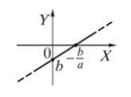
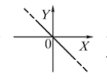
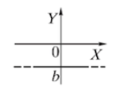
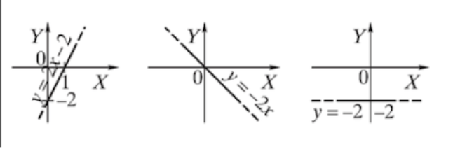

TIESINĖS FUNKCIJOS
Funkcija y = f(x) = ax + b, čia a ir b - skaičiai, vadinama tiesinè funkcija.
Tiese y = ax + b ( a 0) ašį OY kerta taške (0; b), o ašį OX - taške (; 0).
Tiesinė funkcija y = f(x) = ax+b visoje apibrėžimo srityje yra:
- didėjanti, kai a > 0;
- mažėjanti, kai a < 0;
- pastovi, kai a = 0.



y = f(x) = 2x-2,
y = g(x) = −2x,
y = h(x) = -2 - tiesinės funkcijos.
Tiesė y = 2x-3 ašį OY kerta taške (0; −3), ašį OX – taške (; 0).
